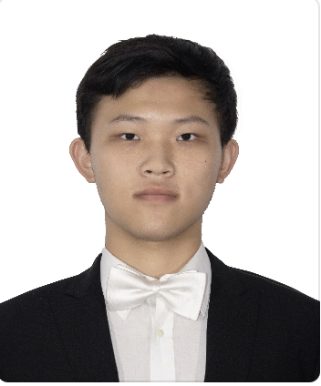

Runzhi Wu吴润之Beng.
Tianjin University I will graduate in mid-2025 and continue to study for a master's degree! Email: wurunzhi@tju.edu.cn 

|
 |
Biography
I am a final-year BEng. in Software Engineering at College of Intelligence and Computing, Tianjin University (TJU), advised by Prof. Ran SU.
News
Awards and Honors
| Outstanding student leader in Tianjin University, 2021-2022 |
| Merit student in Tianjin University, 2022-2023 |
| Top-Performing Student of Grade 2021, College of Intelligent and Computing, Tianjin University, 2023 |
| Advanced literary and artistic individual, College of Intelligent and Computing, 2023 |
| Outstanding student leader in Tianjin University, 2023-2024 |
Selected Student Works
| Secretary of Tianjin University Peiyang Symphony Orchestra, 2023-2024 |
| Deputy secretary of Tianjin University Peiyang Art Troupe, 2022-2023 |
| Vice leader of national Flag Guard, Tianjin University, 2023-2024 |
| Monitor, 2021-Presnet |
| Founder and chairman of Tianjin University Intelligence and Computing Open Source Club, 2023-Present |
| Minister of College of Intelligence and Computing Student Union in Tianjin University, 2022-2023 |
Publications
© Runzhi WU | Last updated: Mar 2025